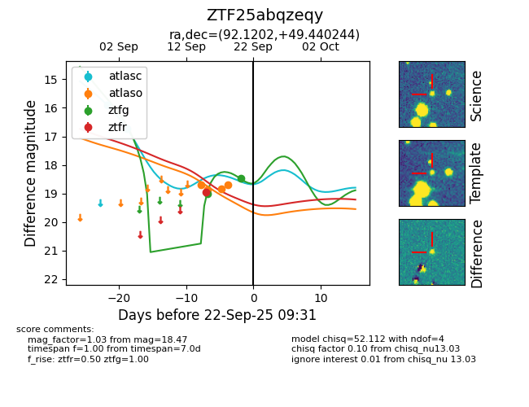

FINK: ZTF25abqzeqy
Lasair: ZTF25abqzeqy
ALeRCE: ZTF25abqzeqy
ZTF25abqzeqy (ztf,fink)
equatorial (ra, dec) = (92.1202,+49.44024)
galactic (l, b) = (164.0680,+13.80319)

last atlasc=16.74, atlaso=18.70, ztfg=18.47, ztfr=18.96
2 atlasc, 4 atlaso, 2 ztfg, 1 ztfr detections